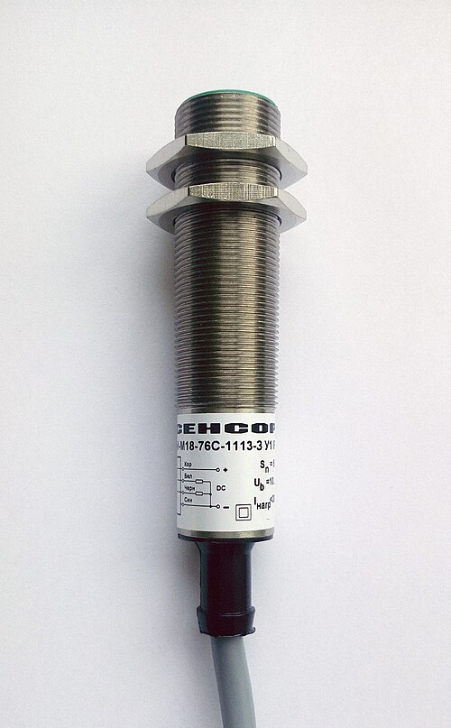

Replace an IO-Link sensor and verify its data
Use a paper trainer or an isolated master to prove device identity, parameters, validity and the PLC's interpretation.
Trace from sensor to programme
On a modern machine, an IO-Link sensor can report a measured value, device identity and diagnostics over one point-to-point connection to a master port. The master talks upstream to a PLC or control application. Sensor teaching parameters and cyclic process data have different roles. The IODD is the device description that tells commissioning software how to interpret and configure the device. T46 · Pin functions, data and validity.

Photo by Ekbsensor, Wikimedia thumbnail, with on-page callouts. Original photo · CC BY-SA 4.0.

Watch ifm’s IO-Link sensor replacement demonstration. Watch which parameter the master restores. Check the device and port compatibility required before depending on this behaviour. ifm’s IO-Link sensor replacement demonstration on YouTube.
Follow the port map on an actual master
Use the AL1100 product photograph and connection drawing as an identification exercise. Trace the name of each connection into the datasheet before choosing any cable. The table describes this ifm model. Other devices can use different port numbers and supplies. ifm AL1100 photographs and technical data.
| AL1100 marking | What you verify |
|---|---|
| X01–X04 | Four Class A IO-Link device ports with A-coded M12 connectors. Trace the actual port number to its device identity and PLC mapping. |
| X21, X22 | Separate PROFINET connections with D-coded M12 connectors. Check the upstream link independently from the sensor status. |
| Supply connector | Use the supply connection drawing and only the matching power lead. A threaded body by itself does not identify a connector’s electrical function. |
Bench exercise with no master
The old worksheet says X02. The replacement reads back the expected device ID on X03. The PLC still shows invalid data from X02. The new sensor has proved communication on its current port. Check the documented cable and port assignment before changing programming or a teach value. Recheck both device ID and process-data validity on the assigned port after the correction.
Make a replacement test card
Start on paper with an inductive sensor aimed at a small steel target on a fixture. Use a real unit only on your own isolated training kit, with its compatible master, manufacturer cable and isolated supply. Switch the kit off before changing the cable or sensor unless its procedure specifies hot replacement. Check the port mode, Class A or B wiring and current rating before connecting. Use the manufacturer's pinout for all equipment.
Record the old port, vendor and device IDs, compatible revision, IODD, switch-on distance and which PLC tag consumes the value. Record the state at a close target, a far target and with no valid data.
Check the master configuration for port validation and parameter storage. If the exact compatible replacement and both devices support the intended storage behaviour, check which direction the parameter set is transferred. Verify what actually arrived before moving the machine sequence. Never use the trainer for a machinery safety function.
Repeat the original close, far and missing data tests. Record raw data, decoded data and validity separately. Change only one item at a time. A plain switching sensor in standard I/O (SIO) mode may produce a switch state while the expected IO-Link process data and diagnostics are missing.
| Synthetic trainer observation | Interpretation and next check |
|---|---|
Port valid, bytes FA 00. Sample map is unsigned little-endian, 0.1 mm per count. | 250 counts gives 25.0 mm. The real device may use another layout. Match the actual process-data definition. |
Bytes remain FA 00, port data becomes invalid. | The old 25.0 mm can be retained on screen. Treat it as invalid and compare port diagnostics, then prove recovery. |
| New sensor links but switches at a different target distance. | Verify product identity, selected range, teach-in and master parameter storage. Compare a measured reference after restoring the intended setting. |
| Device LED changes, PLC tag always stays off. | Check port mode, mapping, bit position and device process validity before replacing an otherwise responsive sensor. |
Check which settings belong in the master port profile and which come from the device description. ifm IO-Link technology guide · IO-Link Community specifications and technology.
Save device and port IDs, the intended parameters, and a before-and-after test matrix. Explain why a believable number needs a validity check.